Étudiant en Génie Mécanique · L3 Université de Poitiers
Passionné par la conception mécanique et l'automatisme, je mets mes compétences en SolidWorks et B&R Automation Studio au service de projets concrets. À la recherche d'un stage à partir d'avril 2026.
Étudiant motivé en troisième année de Licence Génie Mécanique à l'Université de Poitiers, je bénéficie d'un parcours international ayant débuté en Pologne, à Kielce University of Technology, où j'ai suivi deux années de formation en anglais. Cette expérience m'a doté d'un niveau C1 en anglais (IELTS), me permettant d'évoluer aisément dans un contexte bilingue. Ma maîtrise approfondie de SolidWorks s'est construite au fil de nombreux projets de bureau d'études, allant de la conception de pièces mécanosoudées aux simulations de résistance des matériaux. J'ai également développé une solide compétence en automatisme avec B&R Automation Studio, incluant la programmation GRAFCET et le langage ST. Désireux de confronter mes acquis au monde professionnel, je suis activement à la recherche d'un stage en ingénierie mécanique à partir d'avril 2026.
Formation
Mon cursus académique
Université de Poitiers
Licence Génie Mécanique — L3
Poitiers, France
2025 — Présent
Matières principales
Contenu à venir...
Kielce University of Technology
Licence Génie Mécanique — L1 / L2
Kielce, Pologne
2023 — 2025
Matières principales
Contenu à venir...
Compétences & Expertise
Mes outils et savoir-faire
SolidWorks
Avancé
Python (NumPy)
Intermédiaire
B&R Automation Studio
Intermédiaire
LaTeX
Avancé
Microsoft Office
Avancé
Langues
Mes compétences linguistiques
🇬🇧
Anglais
C1 — IELTS
🇫🇷
Français
C1 — TCF
🇩🇿
Arabe
Langue maternelle
Mon Parcours
Les étapes clés de ma formation
2023 — 2025
Kielce University of Technology
Deux années d'études en anglais au sein de Kielce University of Technology en Pologne, où j'ai acquis des bases solides en génie mécanique. J'ai eu l'opportunité de travailler sur des machines CNC et de développer une compréhension approfondie des procédés de fabrication. Cette expérience internationale m'a permis de renforcer mon niveau d'anglais et de m'adapter à un environnement multiculturel.
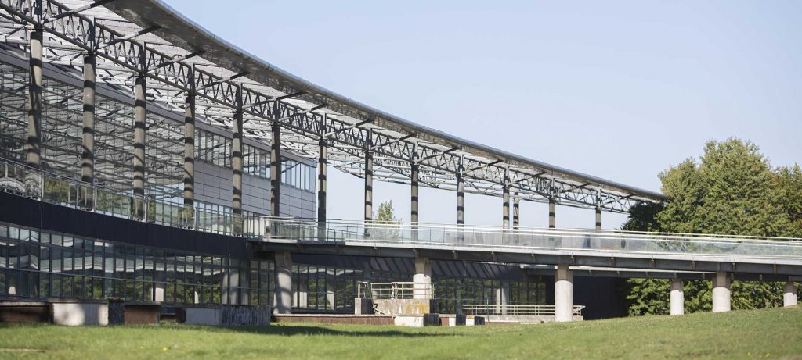
2025 — Présent
Université de Poitiers
En intégrant l'Université de Poitiers en L3, j'ai eu la chance de travailler sur de nombreux projets de conception mécanique en travaux pratiques, ce qui a considérablement renforcé ma maîtrise de SolidWorks. J'ai également découvert l'automatisme avec B&R Automation Studio et acquis de bonnes bases en programmation ST. Ces projets concrets m'ont permis de développer une approche rigoureuse de l'ingénierie mécanique.
Galerie de Projets
Mes réalisations en bureau d'études
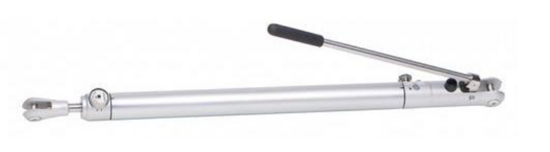
Ridoir hydraulique — Re-conception mécano-soudée
Re-conception et optimisation d'un ridoir mécano-soudé : simplification, simulation éléments finis et allègement de 32%.
SolidWorksSimulation FEAConception
Projet à venir
Détails du projet à ajouter prochainement.
SolidWorksGénie Mécanique
Projet à venir
Détails du projet à ajouter prochainement.
SolidWorksGénie Mécanique
Projet à venir
Détails du projet à ajouter prochainement.
SolidWorksGénie Mécanique
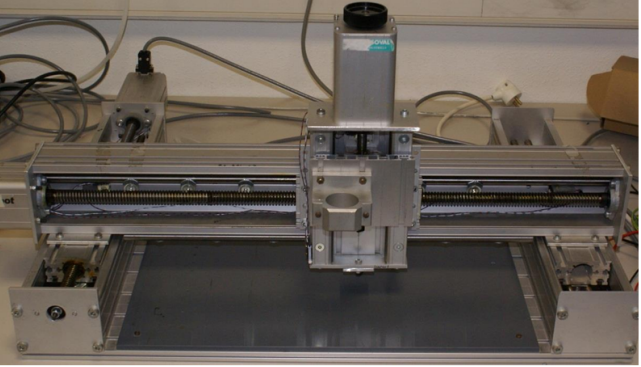
Machine de poteyage sur portique cartésien
Programmation du cycle automatisé d'une machine de poteyage pour le dépôt de carbone sur demi-moules en verre, avec balayage en zigzag via portique cartésien.
Ce projet consistait à développer et programmer le cycle automatisé d'une machine de poteyage utilisée pour déposer une couche de carbone sur des demi-moules en verre afin de faciliter le démoulage. Le système repose sur un portique cartésien motorisé par des moteurs pas-à-pas permettant de déplacer les moules au-dessus d'un brûleur fixe selon une stratégie de balayage définie.
Le travail a consisté à définir les paramètres fonctionnels du cycle, concevoir le GRAFCET de commande, programmer le cycle en Structured Text puis valider le fonctionnement en simulation et sur installation réelle.
Fonction du programme développé
Le programme automatise entièrement le cycle de poteyage :
Initialisation et homing des axes X et Y
Positionnement au point de départ (deltaX, deltaY)
Balayage en zigzag de la zone de traitement
Synchronisation des déplacements X et Y avec alternance montée/descente
Gestion de la flamme (allumage au début, extinction en fin de cycle)
Retour automatique en position initiale
Le code gère les boucles de balayage permettant d'alterner les déplacements verticaux pendant l'avancement horizontal afin d'assurer une couverture complète et homogène de la surface.
Code source (Structured Text)
PROGRAM _INIT
// Initialisation des variables sans valeur par defaut
aNom := 10.0; // Acceleration nominale [mm/s^2]
vNom := 20.0; // Vitesse nominale [mm/s]
// Initialisation des parametres du cycle de poteyage
a := 250.0; // Longueur du moule [mm]
b := 120.0; // Largeur du moule [mm]
pas := 30.0; // Pas de balayage [mm]
deltaX := 10.0; // Decalage initial axe X [mm]
deltaY := 10.0; // Decalage initial axe Y [mm]
// Initialisation des positions et compteur
posX := 0.0;
posY := 0.0;
i := 0;
// Initialisation variables detection front montant
ihm_start_prev := FALSE;
// Initialisation flamme
Flamme := FALSE;
END_PROGRAM
PROGRAM _CYCLIC
// ============================================
// LEGENDE DES COMMANDES ET INFORMATIONS :
// COMMANDES (Cmd_X, Cmd_Y) :
// BpOn = Allumer/activer l'axe (mise sous tension)
// BpHome = Demander homing (recherche de l'origine)
// MoveAbsolute.Acc = Definir l'acceleration du mouvement
// MoveAbsolute.Vit = Definir la vitesse du mouvement
// MoveAbsolute.Pos = Definir la position destination
// MoveAbsolute.BpMove = Demarrer le mouvement
// INFORMATIONS (Info_X, Info_Y) :
// PowerOn = L'axe est alimente/sous tension
// IsHomed = L'axe a termine le homing
// Standstill = L'axe est arrete (arrive a destination)
// ============================================
// Logique normale du grafcet
CASE etat OF
0: // ETAT 0 : Attente bouton ON
IF ihm_on THEN
etat := 1;
Cmd_X.BpOn := TRUE;
Cmd_Y.BpOn := TRUE;
END_IF
1: // ETAT 1 : Attente alimentation des axes
IF Info_X.PowerOn AND Info_Y.PowerOn THEN
etat := 2;
END_IF
2: // ETAT 2 : Attente bouton HOME
IF ihm_home THEN
ihm_home := FALSE;
Cmd_X.BpHome := TRUE;
Cmd_Y.BpHome := TRUE;
etat := 3;
END_IF
3: // ETAT 3 : Attente fin du homing
IF Info_X.Standstill AND Info_Y.Standstill
AND Info_X.IsHomed AND Info_Y.IsHomed THEN
posX := 0.0;
posY := 0.0;
etat := 4;
END_IF
4: // ETAT 4 : Attente bouton START
Cmd_X.MoveAbsolute.BpMove := FALSE;
Cmd_Y.MoveAbsolute.BpMove := FALSE;
IF NOT ihm_on THEN
etat := 5;
Cmd_X.BpOn := FALSE;
Cmd_Y.BpOn := FALSE;
ELSIF ihm_start AND NOT ihm_start_prev THEN
IF posX = 0.0 AND posY = 0.0 THEN
// Lancer le cycle de poteyage
Flamme := TRUE;
posX := deltaX;
posY := deltaY;
Cmd_X.MoveAbsolute.Acc := aNom;
Cmd_X.MoveAbsolute.Vit := vNom;
Cmd_X.MoveAbsolute.Pos := posX;
Cmd_X.MoveAbsolute.BpMove := TRUE;
Cmd_Y.MoveAbsolute.Acc := aNom;
Cmd_Y.MoveAbsolute.Vit := vNom;
Cmd_Y.MoveAbsolute.Pos := posY;
Cmd_Y.MoveAbsolute.BpMove := TRUE;
etat := 10;
ELSE
// Retour a l'origine
Flamme := FALSE;
posX := 0.0;
posY := 0.0;
Cmd_X.MoveAbsolute.Pos := posX;
Cmd_X.MoveAbsolute.BpMove := TRUE;
Cmd_Y.MoveAbsolute.Pos := posY;
Cmd_Y.MoveAbsolute.BpMove := TRUE;
etat := 4;
END_IF
END_IF
ihm_start_prev := ihm_start;
5: // ETAT 5 : Arret/Redemarrage des axes
IF NOT Info_X.PowerOn AND NOT Info_Y.PowerOn THEN
IF ihm_on THEN
etat := 1;
Cmd_X.BpOn := TRUE;
Cmd_Y.BpOn := TRUE;
END_IF
ELSIF Info_X.PowerOn AND Info_Y.PowerOn THEN
etat := 4;
END_IF
10: // ETAT 10 : Arrivee position de depart (10,10)
IF Info_X.Standstill AND Info_Y.Standstill THEN
Cmd_X.MoveAbsolute.BpMove := FALSE;
Cmd_Y.MoveAbsolute.BpMove := FALSE;
posY := deltaY + a; // 10 + 250 = 260mm
Cmd_Y.MoveAbsolute.Pos := posY;
Cmd_Y.MoveAbsolute.BpMove := TRUE;
etat := 11;
END_IF
11: // ETAT 11 : Y monte vers 260mm
IF Info_Y.Standstill THEN
Cmd_Y.MoveAbsolute.BpMove := FALSE;
IF posX >= (deltaX + 3.0 * b) THEN
// Fin balayage : Y descend a 10mm
posY := deltaY;
Cmd_Y.MoveAbsolute.Pos := posY;
Cmd_Y.MoveAbsolute.BpMove := TRUE;
etat := 13;
ELSE
// X avance de +30mm
posX := posX + pas;
Cmd_X.MoveAbsolute.Pos := posX;
Cmd_X.MoveAbsolute.BpMove := TRUE;
etat := 12;
END_IF
END_IF
12: // ETAT 12 : X se deplace vers la droite
IF Info_X.Standstill THEN
Cmd_X.MoveAbsolute.BpMove := FALSE;
IF posX >= (deltaX + 3.0 * b) THEN
IF posY >= (deltaY + a - 1.0) THEN
posY := deltaY;
Cmd_Y.MoveAbsolute.Pos := posY;
Cmd_Y.MoveAbsolute.BpMove := TRUE;
etat := 13;
ELSE
etat := 14;
END_IF
ELSE
IF posY >= (deltaY + a - 1.0) THEN
posY := deltaY;
Cmd_Y.MoveAbsolute.Pos := posY;
Cmd_Y.MoveAbsolute.BpMove := TRUE;
etat := 13;
ELSE
posY := deltaY + a;
Cmd_Y.MoveAbsolute.Pos := posY;
Cmd_Y.MoveAbsolute.BpMove := TRUE;
etat := 11;
END_IF
END_IF
END_IF
13: // ETAT 13 : Y descend vers 10mm
IF Info_Y.Standstill THEN
Cmd_Y.MoveAbsolute.BpMove := FALSE;
IF posX >= (deltaX + 3.0 * b) THEN
etat := 14;
ELSE
posX := posX + pas;
Cmd_X.MoveAbsolute.Pos := posX;
Cmd_X.MoveAbsolute.BpMove := TRUE;
etat := 12;
END_IF
END_IF
14: // ETAT 14 : Fin du balayage
Cmd_X.MoveAbsolute.BpMove := FALSE;
Cmd_Y.MoveAbsolute.BpMove := FALSE;
etat := 4;
END_CASE;
END_PROGRAM
(* ============================================ *)
(* PARAMETRES DE MOUVEMENT *)
(* ============================================ *)
VAR
aNom : REAL; (* Acceleration nominale en mm/s² *)
vNom : REAL; (* Vitesse nominale en mm/s *)
dest : REAL; (* Destination sur x [mm] *)
(* BOUTONS DE L'INTERFACE (ENTREES) *)
ihm_on : BOOL; (* Bouton ON : demarrage machine *)
ihm_start : BOOL; (* Bouton START : depart du cycle *)
ihm_home : BOOL; (* Bouton HOME : prise d'origine *)
(* ETAT DU GRAPHCET *)
etat : USINT; (* Numero de l'etat actuel *)
(* DETECTION FRONT MONTANT *)
ihm_start_prev : BOOL; (* Memoire etat precedent START *)
(* GESTION FLAMME *)
Flamme : BOOL; (* TRUE = allumee, FALSE = eteinte *)
(* PARAMETRES DU CYCLE *)
a : REAL; (* Longueur du moule [mm] *)
b : REAL; (* Largeur du moule [mm] *)
pas : REAL; (* Pas de balayage [mm] *)
deltaX : REAL; (* Decalage initial axe X [mm] *)
deltaY : REAL; (* Decalage initial axe Y [mm] *)
(* VARIABLES DE POSITION *)
posX : REAL; (* Position courante axe X [mm] *)
posY : REAL; (* Position courante axe Y [mm] *)
i : USINT; (* Compteur de cycles *)
END_VAR
Les chronogrammes montrent un fonctionnement cohérent du cycle :
Vitesse X — cycles accélération / vitesse constante / décélération correspondant aux déplacements horizontaux
Vitesse Y — alternance montée / arrêt / descente correspondant au balayage vertical en zigzag
Les courbes confirment que la trajectoire respecte le pas de balayage et la stratégie programmée.
Validation expérimentale
Le bon fonctionnement du système a été vérifié expérimentalement en remplaçant le brûleur par un feutre et en utilisant une feuille blanche pour tracer la trajectoire. Le tracé obtenu confirme que le déplacement réel correspond à la trajectoire théorique programmée et valide le cycle automatisé.
Ridoir hydraulique — Re-conception et optimisation mécano-soudée
L'objectif du projet était de reconcevoir une pièce de ridoir initialement complexe à fabriquer afin de proposer une solution mécano-soudée plus simple, plus légère et adaptée à la fabrication industrielle, tout en garantissant sa résistance mécanique par simulation.
Analyse et modélisation initiale
Le travail a commencé par l'analyse complète d'un plan technique afin de comprendre la géométrie, les fonctions mécaniques et les contraintes de la pièce. Une modélisation 3D complète a ensuite été réalisée sous SolidWorks.
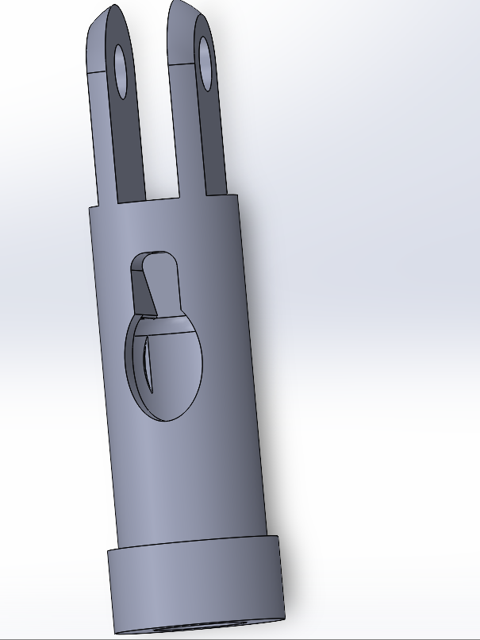
Modèle 3D de la pièce initiale
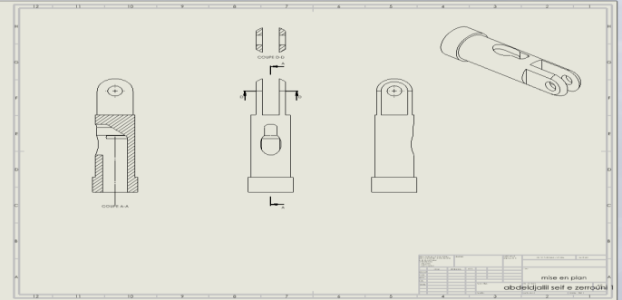
Plan technique — coupes et vues
Nouvelle conception mécano-soudée
La pièce a ensuite été repensée dans une logique de fabrication mécano-soudée. La conception a été simplifiée en décomposant la pièce en plusieurs éléments simples à usiner puis à assembler par soudage. Une nouvelle architecture a été proposée afin de supprimer certaines formes complexes d'usinage.
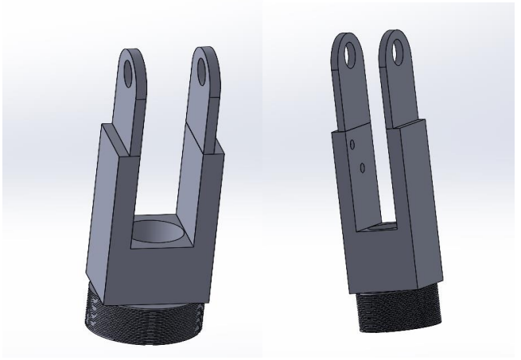
Vue 3D de la nouvelle conception mécano-soudée
Définition des zones de soudure
L'assemblage soudé a ensuite été défini en précisant les zones de cordons de soudure afin d'assurer la rigidité et la continuité mécanique de la pièce.
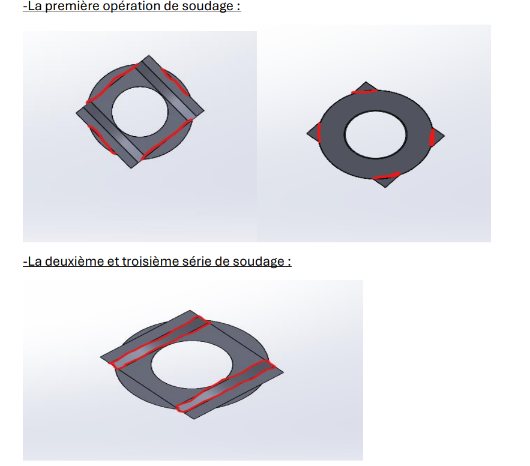
Position des cordons de soudure (zones rouges)
Validation par simulation éléments finis
Une validation mécanique a été réalisée par simulation éléments finis afin de vérifier la tenue de la pièce sous charge. Cette analyse a permis d'identifier les zones critiques, principalement autour des trous de fixation.
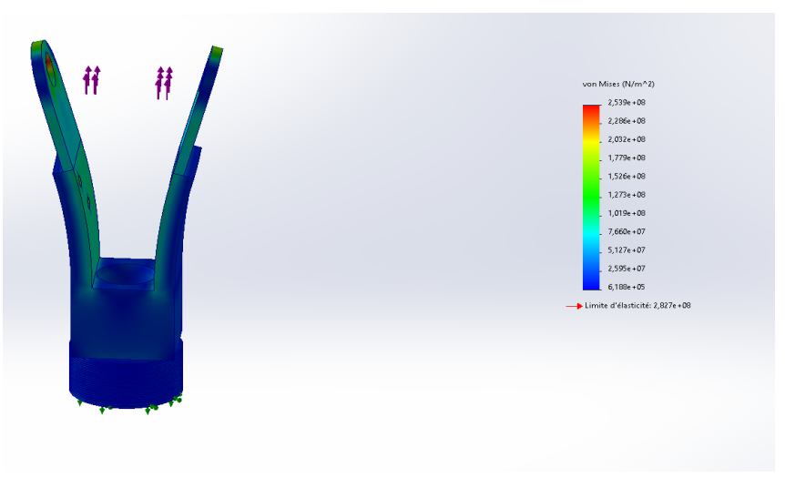
Simulation contraintes Von Mises — zone critique visible
Optimisation de la masse
La pièce a ensuite été optimisée afin de réduire sa masse tout en conservant ses performances mécaniques. Plusieurs modifications géométriques ont permis d'obtenir un allègement significatif.
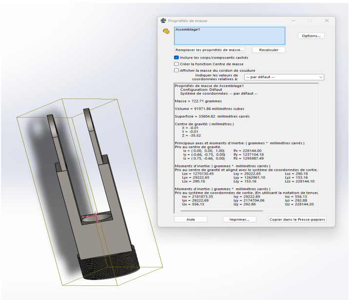
Pièce initiale — 722,71 g
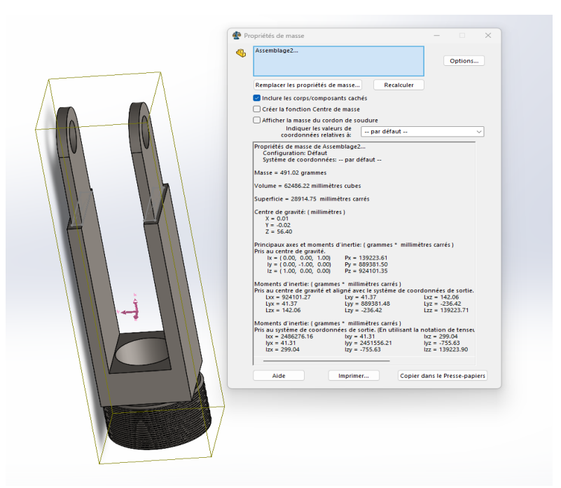
Pièce optimisée — 491,02 g
Masse initiale~723 g
Masse optimisée~491 g
Gain de masse~232 g (−32%)
Validation de la pièce optimisée
Une seconde simulation éléments finis a été réalisée sur la pièce optimisée afin de vérifier que l'allègement n'a pas compromis sa tenue mécanique. Les résultats montrent que la contrainte maximale de Von Mises atteint environ 296 MPa, très proche de la limite d'élasticité du matériau (283 MPa). La pièce résiste donc aux charges appliquées, mais se situe à la limite de sa capacité — ce qui confirme que l'optimisation a été poussée au maximum du potentiel du matériau.
Les zones critiques restent localisées autour des trous de fixation, où les concentrations de contraintes sont les plus élevées en raison de la géométrie.
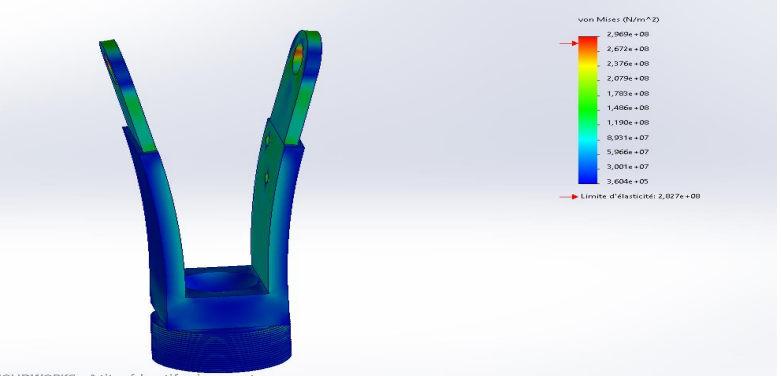
Simulation Von Mises — pièce optimisée (contrainte max ≈ 296 MPa, limite élastique ≈ 283 MPa)
Résultat final
Le projet a permis de concevoir une pièce mécano-soudée optimisée, plus légère et adaptée à la fabrication industrielle, tout en conservant une tenue mécanique validée par simulation.